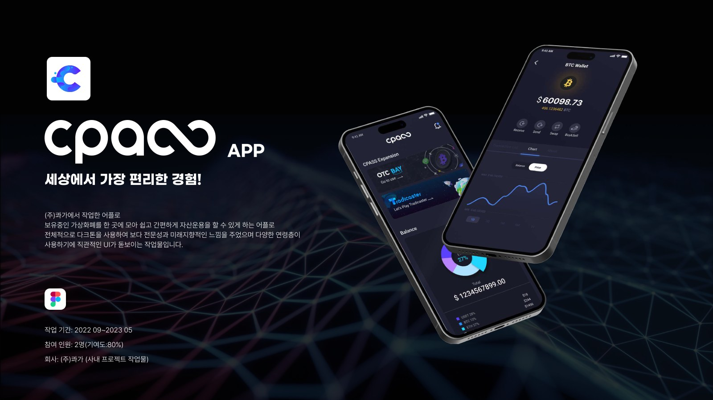
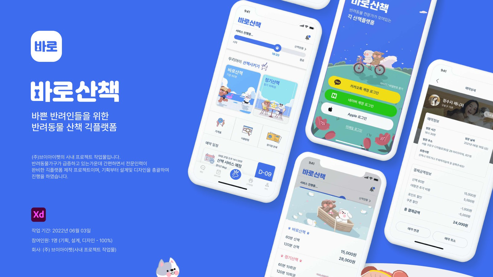
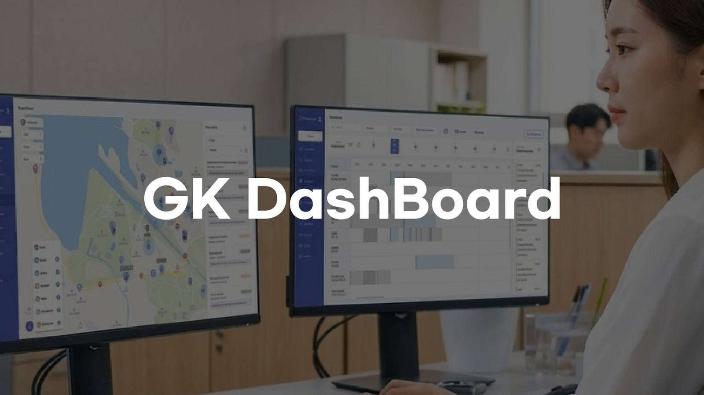

(UX · UI Designer)
Seoul, KR — Since 2020
DESIGN THAT SOLVES™
예쁘기만 한 화면이 아니라, 사용자의 근본 문제를 푸는 설계.
근거로 설득하는 UX·UI 디자이너 최재성입니다.
(01) Manifesto
저는 화면을 예쁘게 그리는 사람이 아니라, 사용자의 근본적인 문제를 해결하는 설계를 하는 사람입니다. 모든 UI 결정은 신뢰를 높이는가, 전환율을 올리는가라는 질문에 근거로 답할 수 있어야 합니다. 기획의 목표와 개발의 제약 사이에서 최적의 답을 찾을 때 디자인은 가장 강력해집니다.
(02) Selected Work
01 / 08
(03) Signature Projects
Signature
Work


(04) How I Work
Approach
디자인은 감이 아니라 근거입니다 — 발견하고, 조율하고, 시각화하고, 설득합니다.
- 01
Discover
브랜드·사용자·비즈니스 맥락을 파고들어 ‘왜’와 진짜 문제를 먼저 찾습니다.
- 02
Align
이해관계자를 각각 만나 입장을 이해하고, 상충하는 요구 사이에서 공통의 기준을 정합니다.
- 03
Visualize
Figma로 구조를 실제 화면으로 시각화해, 말이 아닌 눈으로 확인되는 근거를 만듭니다.
- 04
Persuade
데이터와 레퍼런스 기반의 근거로 양쪽 모두를 설득하고, 최적의 플로우로 완성합니다.
(05) What I Do — Figma · Adobe XD · Photoshop · Illustrator
Expertise
UX/UI Design
사용자 리서치와 정보구조 설계부터 인터랙션까지. 근거 기반으로 화면의 모든 결정을 논리적으로 설명합니다.
- Research
- IA
- Prototyping
Web · App Design
모바일 앱과 반응형 웹. 브랜드에 꼭 맞는 레이아웃과 컴포넌트 시스템을 만듭니다.
- Mobile
- Responsive
- Design System
기획 · 설계
단순 디자인을 넘어 서비스 기획과 플로우 설계까지. 문제 정의부터 함께합니다.
- Service Planning
- Flow
- Strategy
Branding · Graphic
BI 구축과 마케팅·인쇄물까지. 브랜드 아이덴티티를 일관되게 시각화합니다.
- BI
- Marketing
0
Years in UX·UI
0
Featured projects
0%
Sign-up increase
0%
Sales uplift
(06) Philosophy
저는 예쁘기만 한 디자인을 하지 않습니다. 사용자의 근본 문제를 해결하는 설계에 집중하고, 모든 결정을 근거로 설명할 수 있는 디자이너가 되고자 합니다.
-
01
어디서든 최고가 되자
지금 있는 곳에서 최선의 결과를 쌓다 보면 그것이 모여 최고가 된다고 믿습니다.
-
02
고집보다 수용과 발전
더 나은 아이디어는 적극적으로 받아들이고, 근거가 필요한 의견은 차분히 설득합니다.
-
03
생각하는 디자이너
어떻게 해야 사용자가 편리하고 직관적인지, 니즈를 디자인으로 어떻게 녹일지 늘 고민합니다.
-
04
신속·정확한 일처리
우선순위를 매기고 하루 처리량을 계산해, 짧은 기간에도 흔들림 없이 완성합니다.
(07) Career
Career
- 2023.09 — 현재연구원 · 크리에이티브팀 — (주)그라운드케이자사 웹사이트 · 산단타요 앱 총괄
- 2022.09 — 2023.06디자인팀 — (주)콰가자사 웹/앱 디자인 · 기획
- 2021.05 — 2022.09대리 · 디자인팀 — (주)브이아이펫O2O 플랫폼 UX/UI · 마케팅
- 2021.02 — 2021.05주니어 디자이너 — 인더엑스(INTHE-X)웹에이전시 클라이언트 웹/앱
- 2013 — 2020시각정보디자인 전문학사 — 동양미래대학교Visual Information Design
(08) Recognition
Awards
- 2020Red Dot Award — Design Communication입상
- 2020신산업 기반 창의적 종합설계 경진대회참가
- 2020포트폴리오 경진대회참가
- 2020GTQ 포토샵 1급 — 한국생산성본부자격증
- 20121종 보통 운전면허자격증